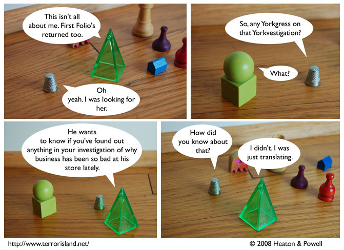

Strip #302
— Friday, May 16, 2008
Aorist dislikes being the center of attention.
Notes, Thoughts, &c.
Ben’s Notes
TerrIslFanCon 2008 update: The convention will be meeting at Stanford instead. Probably at or around Tresidder. Remember, Sunday afternoon. Attendance may be limited, so don’t be late! See forum for details.
Lewis’s Notes
What if instead, we have the convention at that big Kenneth Snelson sculpture at Stanford? You know, the one near the clock tower.
I wrote Lewis’s comments today. -Ben